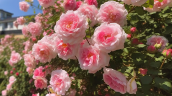

Best Flowers for each Season
Spring

Daffodils
Early Bloomers Daffodils are among the first flowers to bloom after winter, making them a cheerful sign that spring has arrived. Their bright yellow, white, and orange hues bring warmth and life to gardens after the cold months.
Resilient Daffodils can survive cold temperatures and even light snow, making them ideal for early spring.
Low Maintenance Once planted, daffodils return year after year without needing replanting. Over time, they multiply naturally, creating larger and more impressive floral displays each season without much effort.
Adaptable to Various Conditions Daffodils can thrive in a wide range of soil types, as long as there is good drainage. They grow well in full sun to partial shade, making them versatile for different garden settings.
For more information on Daffodils click here!

Tulips
ResilientTulips thrive in cool spring weather and can even handle a little frost. This makes them the perfect flower to greet unpredictable spring temperatures.
Elegant and Refined Blooms Tulips have a classic, refined shape that adds elegance to any garden. Whether in formal gardens or wildflower meadows, their simple, smooth petals elevate any landscape.
Endless Color Variety Tulips are one of the most diverse flowers in terms of color and patterns. From solid vibrant reds and yellows to pastel pinks and even striped or bi-colored blooms, tulips offer a palette of options for every garden design.
Naturalizing in GardensTulips are perfect for creating beautiful clusters in your garden. Once planted, they tend to naturalize, meaning they can spread and multiply over time. This makes them a great option for low-maintenance spring gardens that come back each year with little effort.
For more information on Tulips click here!
Summer
Sunflowers
Heat Resistant Unlike many delicate summer flowers, sunflowers can handle extreme heat and still thrive. Their deep root systems help them access moisture from deeper soil, making them resilient during dry spells.
Multi-Purpose & UsefulSunflower seeds are edible and packed with nutrients, used for snacks, oil production, and even livestock feed. Their stalks can be used as natural trellises for climbing plants like beans.
Tall & Striking BeautyWith varieties ranging from small, potted sunflowers to towering 12-foot giants, they create an impressive focal point in any garden. Their bright yellow petals instantly add warmth and cheer to any summer landscape.
For more information on Sunflowers click here!

Roses
Fragrant Many roses have a rich, sweet fragrance, making them perfect for gardens, bouquets, and perfumes.
Wide Variety of Colors & TypesFrom classic red to soft pastels and vibrant yellows, roses come in a variety of colors to match any garden aesthetic. There are different types, including climbing roses, shrub roses, and miniature roses, offering flexibility for landscaping.
Attracts Pollinators Roses attract bees, butterflies, and hummingbirds, helping sustain pollinators during the summer months.
For more information on Roses click here!
Autumn
Marigolds
Autumn Colors Marigolds bloom in warm shades of gold, orange, yellow, and red, making them a perfect match for fall’s seasonal colors. Their rich, fiery hues make gardens feel warm and vibrant, even as temperatures drop.
Natural Pest Repellent Marigolds have a strong scent that repels pests like aphids, whiteflies, and nematodes. Gardeners often plant them near vegetables (like tomatoes and pumpkins) to protect crops naturally.
Perfect for Autumn Decorations Marigolds are commonly used in autumn celebrations, including harvest festivals and Día de los Muertos (Day of the Dead) in Mexico. Their long-lasting blooms make them ideal for fall floral arrangements, wreaths, and pumpkin decorations.
For more information on Marigolds click here!
Goldenrods
Pollinator Superstars As one of the last major nectar sources before winter, goldenrods support bees, butterflies, and other pollinators when most other flowers have faded. Monarch butterflies rely on goldenrod nectar during their fall migration.
Golden Color for the Autumn Season Goldenrods bloom in late summer and last well into autumn, providing a burst of rich golden-yellow hues that complement fall foliage. Their warm, sunny tones contrast beautifully with reds, oranges, and deep purples in autumn landscapes.
Great for Natural Landscaping Goldenrods work well in meadows, cottage gardens, and roadside plantings. They blend beautifully with other fall perennials like asters, coneflowers, and ornamental grasses.
For more information on Goldenrods click here!
Winter
Snowdrops
Cold-Hardy & Resilient Snowdrops are extremely frost-resistant, able to survive freezing temperatures without damage. Unlike delicate flowers, their tough petals and stems prevent them from wilting in winter weather.
First Food for Pollinators On warmer winter days, bees and other early pollinators search for nectar—snowdrops provide a vital food source when few other plants are blooming.
Bloom in the Harshest Conditions They can push through ice and frost, thriving in temperatures as low as -10°C, One of the few flowers that don’t need warm weather to bloom.
For more information on Snowdrops click here!
Winter Jasmine
Versatile & Fast-Growing It can be trained to climb walls, trellises, and fences, or left to cascade over slopes and garden beds. Works well in containers, hanging baskets, or as ground cover, adding beauty to multiple spaces.
Brightens Up Winter Gardens While most plants are bare or brown in winter, winter jasmine’s golden flowers add warmth to cold, gray landscapes.
Cold & Frost ResistantWinter jasmine thrives in cold temperatures, tolerating freezing weather and even snow-covered conditions.
Unlike delicate spring flowers, it doesn’t need warmth to bloom, making it one of the toughest winter plants.
For more information on Winter Jasmine click here!